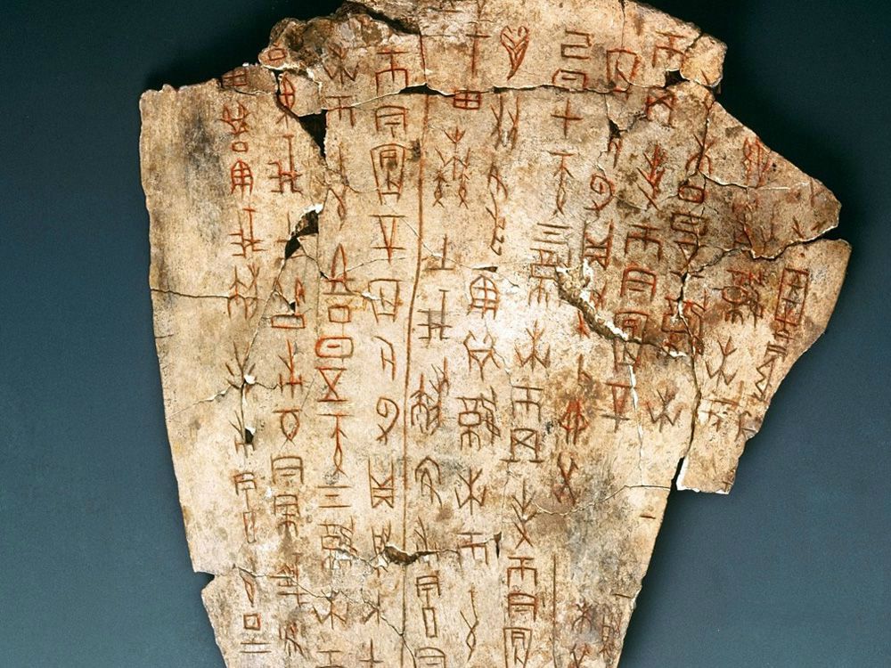
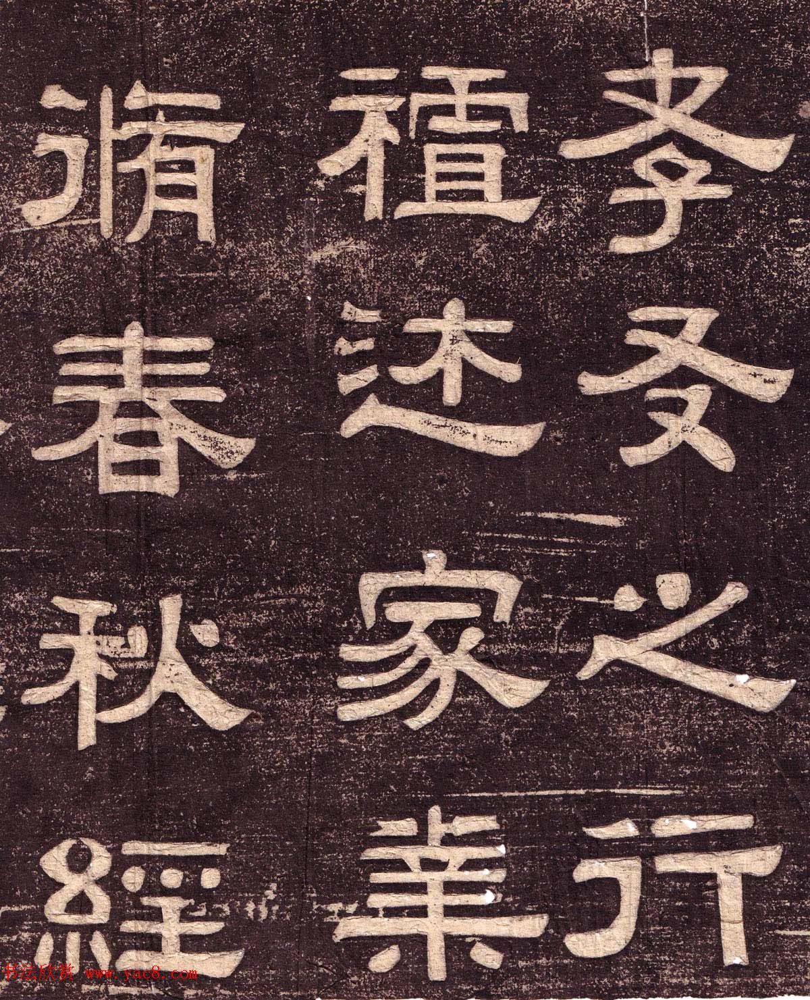
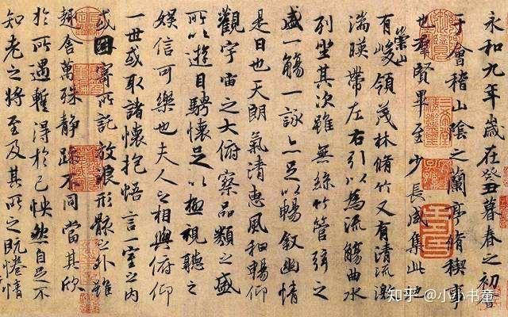
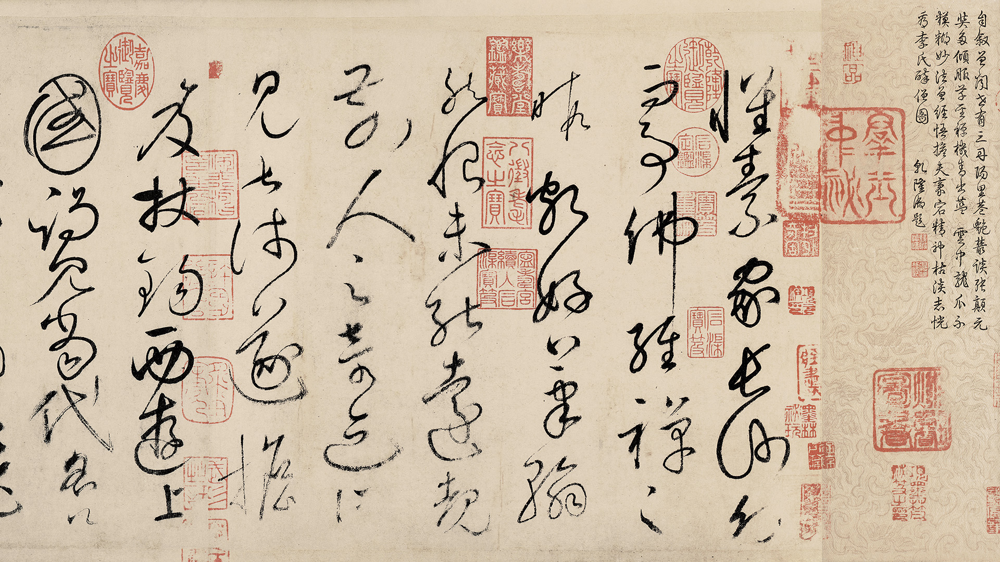
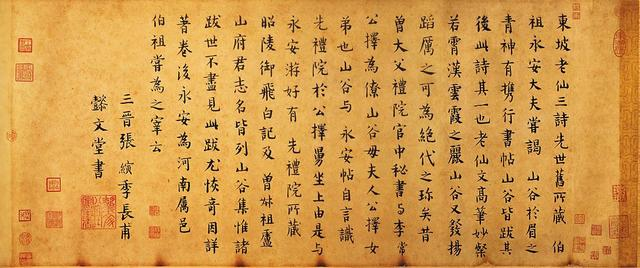
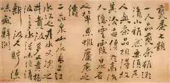

约公元前14世纪 - 前221年
先秦：书法的滥觞
殷商甲骨文，笔法瘦硬劲峭，已具备汉字结构之美；西周金文（钟鼎文），铸刻于青铜重器之上，风格厚重凝练，圆转流畅，展现了庙堂之气。

散氏盘（局部） - 金文的烂漫之姿
公元前221年 - 公元220年
秦汉：隶变与法则
李斯小篆统一天下文字，严谨对称。而汉代的“隶变”则是书法史的重大转折，将圆转变为方折，蚕头燕尾，一波三折，奠定了现代汉字的基础。

曹全碑 - 秀美飞动
公元220年 - 420年
魏晋：人的觉醒
这是书法艺术最浪漫的时期。王羲之、王献之父子让书法从实用走向了纯粹的艺术表达。行书如行云流水，草书如惊蛇入草，魏晋风度，千古绝响。

王羲之《兰亭序》（神龙本）- 天下第一行书，飘逸脱俗
公元581年 - 907年
隋唐：法度的巅峰
唐人尚法。欧阳询、颜真卿、柳公权建立了楷书的极致标准。同时，张旭、怀素的狂草打破了一切束缚，将酒神精神注入笔端。

怀素《自叙帖》- 奔蛇走虺，骤雨狂风（唐代草书）
公元960年 - 1368年
宋元：尚意书风
宋人不论法度，而讲究意趣。苏轼、黄庭坚、米芾，主张“我书意造本无法”，强调书法的文人气质和个性流露。

苏轼《寒食帖》- 我书意造本无法，点画信手烦推求
公元1368年 - 1912年
明清：复古与个性的交响
既有董其昌的清淡秀雅，又有徐渭、傅山、王铎的雄强奇崛。碑学兴起，让书法重新从金石中汲取力量。

徐渭 草书 - 笔意奔放，苍劲奇崛